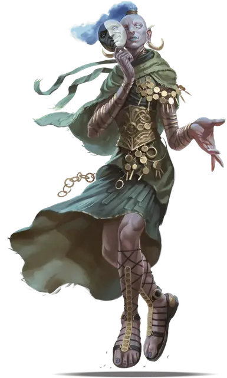

Улыбающийся облачный великан
Cloud Giant Smiling One
Огромный Великан (Облачный великан), обычно хаотично-нейтральный

Класс Доспеха 15 (природный доспех)
Хиты 250 (20к12 + 120)
Скорость 40 футов, летая 40 футов (парит)
| мод | спас | ||
|---|---|---|---|
| СИЛ | 26 | +8 | +8 |
| ЛОВ | 12 | +1 | +1 |
| ТЕЛ | 22 | +6 | +10 |
| мод | спас | ||
|---|---|---|---|
| ИНТ | 15 | +2 | +6 |
| МДР | 16 | +3 | +7 |
| ХАР | 17 | +3 | +3 |
Навыки Восприятие +11, Ловкость рук +9, Обман +11, Проницательность +7
Чувства пассивное Восприятие 21
Языки Общий, Великаний
Опасность 11 (7200 опыта)
Бонус мастерства +4
Среда обитания Горы
Особенности
Власть над погодой (Заклинание 8-го уровня). Великан может накладывать заклинание власть над погодой [control weather], без использования материальных компонентов и используя Харизму в качестве базовой характеристики.
Действия
Мультиатака. Великан совершает две атаки Ударом или две атаки Телекинетическим ударом.
Удар. Рукопашная атака оружием: +12 к попаданию, досягаемость 10 футов, одна цель. Попадание: 21 (3к8 + 8) дробящего урона плюс 5 (1к10) урона силовым полем.
Телекинетический удар. Дальнобойная атака заклинанием: +7 к попаданию, дистанция 240 футов, одна цель. Попадание: 25 (4к10 + 8) урона силовым полем.
Смена формы. Великан магическим образом превращается в Гуманоида или Зверя, которого видел, или принимает свой истинный облик. Всё снаряжение, которое он несёт или носит, сливается с новым обликом. В любом облике великан сохраняет свою игровую статистику и способность говорить. Если великан умирает, то возвращается в истинную форму.
Использование заклинаний. Облачный великан накладывает одно из следующих заклинаний, без затрат материальных компонентов и используя Харизму в качестве базовой характеристики (Сл спасброска от заклинаний 15):
• Неограниченно: обнаружение магии [detect magic], туманное облако [fog cloud], свет [light], малая иллюзия [minor illusion];
• 3/день каждое: невидимость [invisibility], безмолвный образ [silent image], внушение [suggestion], языки [tongues];
• 1/день каждое: газообразная форма [gaseous form], образ [major image].
Бонусные действия
Облачный шаг (перезарядка 4-6). Облачный великан магическим образом телепортируется вместе со всем несомым и носимым снаряжением, на расстояние до 30 футов в свободное пространство, которое он видит.
Описание
Улыбающиеся – это облачные гиганты, которые чтят и подражают коварству и хитрости Мемнора превыше всего. Они превосходные обманщики, которые используют ловкость рук, обман, запутывание и магию, преследуя богатство. У них так же есть тяга к непредсказуемости и очень извращенное чувство юмора. Улыбающиеся преступают границы приличия своим поведением, делая и говоря вещи, которые благородные облачные гиганты считают ниже достоинства своего вида.
Улыбающиеся прозваны так из–за странных двуликих масок, которые они носят. Улыбающаяся половина лица чаще выглядит как ухмылка или торжествующая насмешка, чем как приятная улыбка. Грустная половина представляют неудовольствие, которые улыбающиеся чувствуют из–за своего места в укладе – они вторые после штормовых гигантов. Эти маски являются символом их преданности, а так же скрывают настоящее выражение лица носителя.